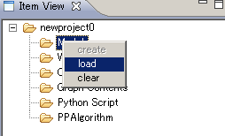
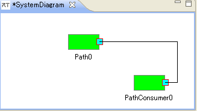
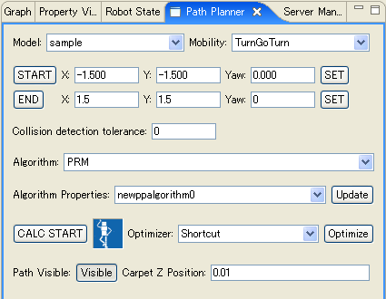
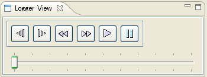
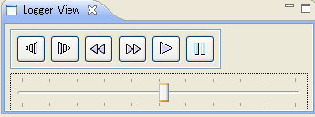
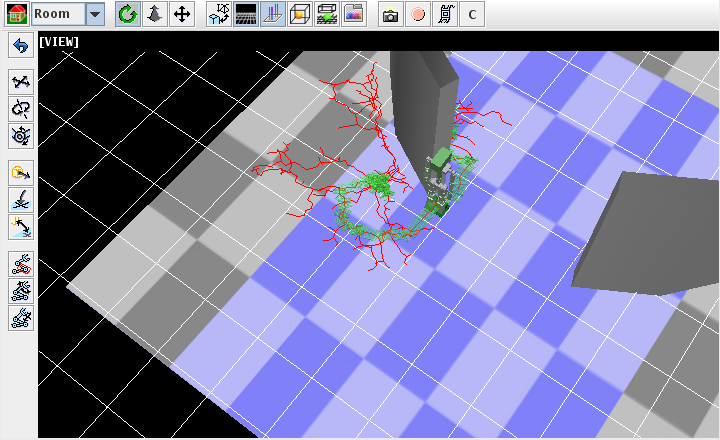

OverviewMove operation design tool plans the migratory pathway of the robot on a two-dimensional plane. It is included in OpenHRP from version 3.1.0.beta3. Move operation design tool consists of move operation design components which can be used also as the RT component, and the PathPlanning view which is one of the views of GrxUI. First of all, please check a rough procedure by an animation.
ConfigurationEclipse starting and display of a perspectivePlease start Eclipse and display a GrxUI perspective. When the GrxUI perspective is not displayed, click "Open perspective" -> "others" and choose GrxUI from a list.
The check of a required viewIf 3DView、Path Planning、Logger View、Property View、Item Vieware not displayed, Please click "Window"->"Display of view"->"others" from a menu bar to add them.

Construction of a sceneYou load the model file of the robot and the obstacle, and build the scene for designing move operation.Loading of the existing projectPlease choose "GrxUI"->"load of project" from a menu bar. Please choose the project file to load.building of a new scenePlease right-click "Model" by Item View, choose "load". Please choose the file to load in a file selection dialog.

Creation of a World State itemPlease right-click "World State" by Item View, choose "create".Creation of a collision pairPlease create the collision pair between a robot and an obstacle by Collision view.Creation of the parameter set for algorithmsPlease right-click "PPArgolithm" by Item View, choose "create". If you save a project, the parameter for algorithms is also saved simultaneously.

Connection with a course plan enginePlease start openhrp-path-planner. Please prepare rtc.conf which described the position of the suitable name server in the directory. Next, please change a perspective into RT System Editor, newly open a stem editor, and drag a Path component and a PathConsumer component. Please connect a service port and a consumer port.

Calculation of a course planYou set a parameter with a PathPlanner view (the following figure).

Selection of a model and an algorithmPlease choose the model and the shifting algorithm which the model has.Unless it is connected with the move operation design component, some setting items, such as a shifting algorithm, are not displayed. When they are not displayed, please check connection using RT System Editor. The starting point and the terminal pointYou set up the starting point and the terminal point of path planning. Please move a robot to the starting point or a terminal point, and push the starting point or a terminal point setup button.You can also input a numerical value into input area directly. A push on the SET button will move a robot to the position. Tolerance of a collision checkYou set up the tolerance of a collision check. When the distance between two objects is smaller than this value, it is considered that those objects have collided. Therefore, the robot can always maintain the distance more than fixed between obstacles.A path plan algorithm, a parameter selection boxYou choose the algorithm and parameter of a path plan.Please choose the algorithm from an algorithm selection box. At present, RRT and PRM are registered. When the algorithm is not displayed, please check connection with a move operation design component. Next, please choose the property of an algorithm from an Algorithm Properties selection box. If you push the Update button of Algorithm Properties, the property for chosen algorithms will be set as a PPAlgorithm item from a move operation design component. The value of a property can be changed by Property View. 
By default, a random number is the range of (-2,-2) ~ (2,2), interpolation distance is 0.1、all weight of distance is 1. A PRM algorithm has the following properties.
By default, Neighborhood distance is 1.0, The number of points is 100. A RRT algorithm has the following properties.
By default, Neighborhood distance is 1.0, The maximum of the number of times of trial is 10000. Path planPlease push a calculation start button to start a path plan. A calculation indicator moves and a dialog is displayed. Please push the button of a dialog, for interrupting calculation on the way.The display of a course and a road mapAfter calculation is completed, selection of a course display button is attained and it can change a display and un-displaying of a course.
 

   Optimization of a pathIn order to optimize the planned path, please choose a path optimization algorithm and push the Optimize button. A display is updated by the optimized path when the path is visible. |